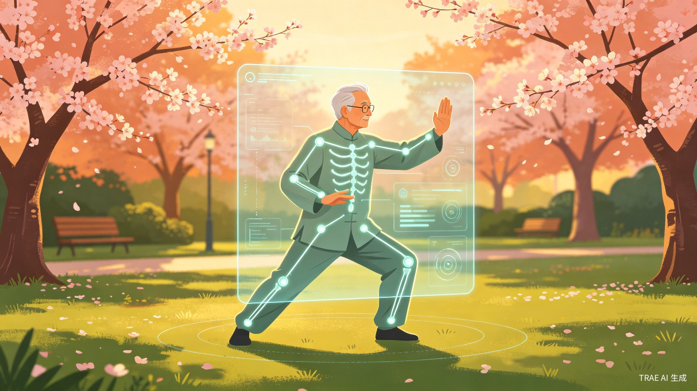
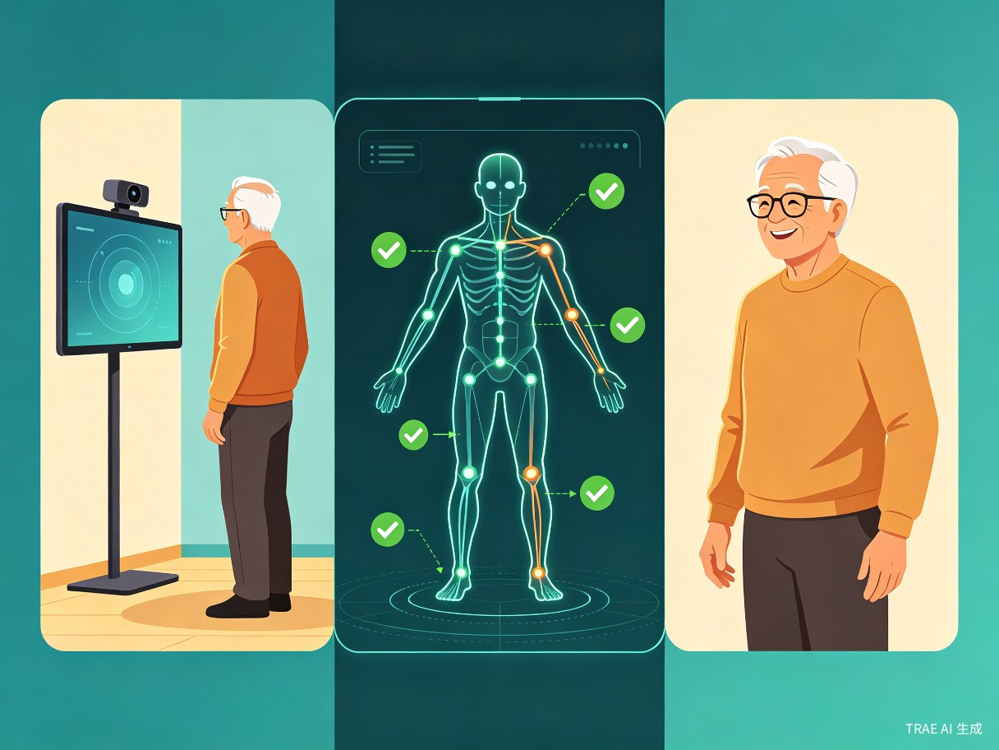
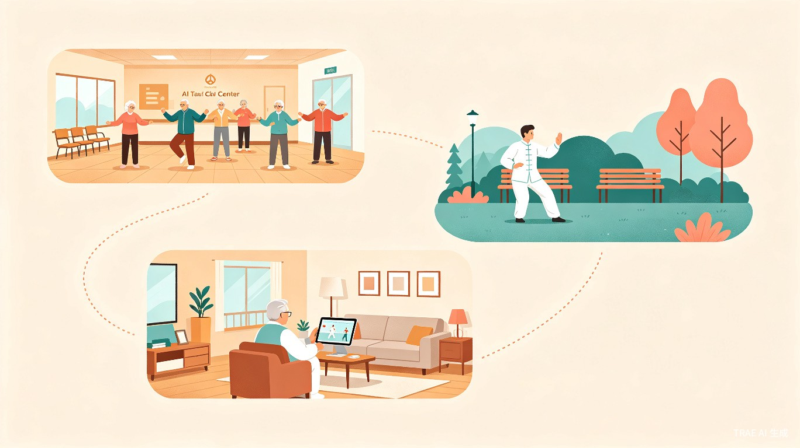

随着人口老龄化加剧，越来越多老年人开始通过太极拳、八段锦、五禽戏等传统武术运动进行健身锻炼。然而，大多数老年人缺乏专业指导，只能通过视频跟练或凭经验练习，容易出现动作不规范、发力错误甚至运动损伤等问题。同时，许多老人因缺少陪伴和反馈，难以长期坚持锻炼。
该产品是一套基于AI视觉识别和动作分析技术的智能运动指导系统，可部署为手机App、智能终端设备或带摄像头和算力模块的专用硬件。系统通过摄像头实时采集人体骨骼关键点数据，对照标准武术动作库进行分析，及时判断动作是否规范，并通过语音实时给予指导和鼓励。

通过摄像头实时捕捉人体33个骨骼关键点，构建三维运动姿态模型，精确记录每一个动作细节。
内置太极拳、八段锦、五禽戏等标准动作数据库，AI算法实时比对用户动作与标准模板的差异。
通过自然语音提供个性化指导，如"手臂再抬高一些""动作放慢一点""保持呼吸节奏"等温馨提示。
实时鼓励反馈如"做得很好，继续坚持"，增强老年人运动积极性，帮助养成持续锻炼习惯。
系统采用端到端的AI视觉分析架构，从数据采集到反馈输出形成完整闭环，确保低延迟、高精度的实时指导体验。
摄像头实时捕获用户运动画面
AI模型识别人体33个关键点
与标准动作库进行智能匹配分析
量化动作偏差，生成纠正建议
实时语音播报指导与鼓励
| 技术模块 | 核心技术 | 功能说明 |
|---|---|---|
| 人体姿态估计 | MediaPipe / OpenPose | 实时提取人体骨骼关键点坐标，支持多角度姿态识别 |
| 动作识别引擎 | 时序卷积网络 (TCN) | 分析关键点时序变化，识别太极拳等特定武术动作 |
| 标准动作库 | 专业武术数据集 | 收录太极拳、八段锦、五禽戏标准动作模板 |
| 语音交互 | TTS语音合成引擎 | 自然流畅的中文语音指导与鼓励反馈 |
| 边缘计算 | NPU / GPU加速推理 | 端侧部署，保障隐私安全，降低网络延迟 |
本产品主要面向60岁以上热爱太极拳、八段锦、五禽戏等传统养生运动的老年群体，同时广泛适用于社区养老中心、老年大学、康复机构以及家庭居家养老场景。

老人在家中即可获得专业指导，子女可远程了解父母锻炼情况。
作为社区养老服务设施的一部分，为多位老人提供集体锻炼指导。
辅助武术课程教学，提升教学质量和学习效果。
辅助康复训练，帮助术后或慢性病患者安全进行运动康复。
帮助老年人获得更加科学、安全的运动指导，提高身体素质和生活质量，降低因错误锻炼导致的运动损伤风险。通过AI陪伴和实时鼓励，增强老年人的运动积极性，促进健康老龄化发展。
产品可广泛应用于社区养老服务、智慧养老平台、老年大学、康养机构以及家庭健康管理市场，形成"AI运动指导+健康管理+养老服务"的创新模式。未来还可扩展到广场舞、康复训练、健身操等更多运动场景，具备较强的市场推广价值和产业化潜力。
在核心太极教练功能成熟后，产品将持续迭代扩展，打造覆盖全年龄段、多运动类型的智能运动指导平台。
扩展到广场舞场景，为更多老年群体提供动作节拍引导。
与医疗机构合作，为术后患者提供专业康复运动指导。
整合运动数据，生成个人健康报告，对接智慧养老平台。
引入手势识别、情感分析等，打造更自然的人机交互体验。